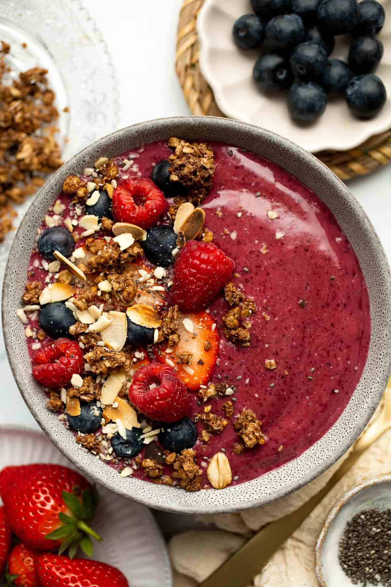

|

|
- 1 cup of Frozen Mixed Berries or fresh blueberries/strawberries/raspberries
- 1/2 - 1 1/3 cup of Cranberry Juice - Sugar Free
- 1 Banana
- 1/2 cup of baby spinach
- 1 tbsp of oats
- 1 tsp of almonds
- 1 tsp of chia seeds
- 1 tsp of flax seeds
- 1/4 cup of Ice (optional... if you are going to use ice put ice in first)
- 1 serving of protein powder (at least 20g... add second)
|